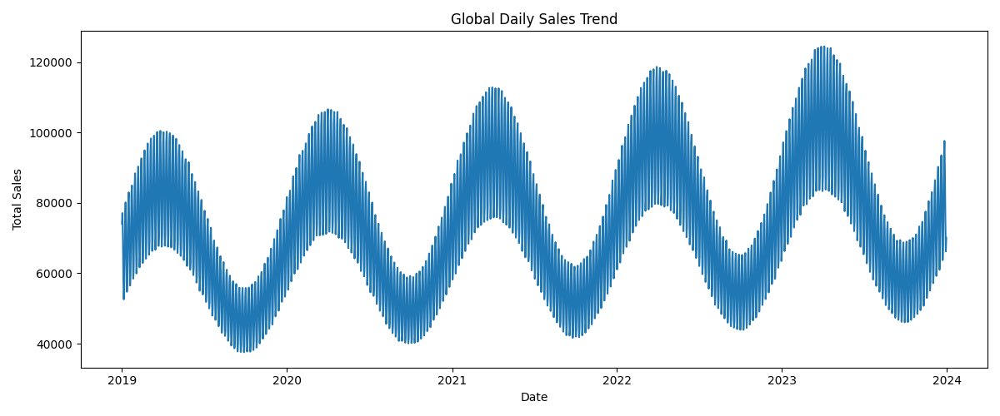

Global Daily Sales Trend Report

What does this plot show?
This plot shows total daily sales aggregated across all stores and items from 2019 to 2024.
Key Observations
- Strong yearly seasonality: Sales rise and fall in a repeating yearly pattern.
- Positive trend: Sales peaks become higher over time, suggesting demand growth.
- Weekly pattern: High-frequency fluctuations suggest weekday effects.
- Peak periods: Highest demand appears around mid-year periods.
- Low periods: Demand is lower near the beginning of each year.
Technical Interpretation
The time series contains both long-term trend and seasonal structure. A reliable forecasting model should capture annual seasonality, weekly effects, and gradual demand growth over time.
Business Implications
- Increase inventory before peak demand periods.
- Plan promotions during lower-demand periods.
- Allocate more staff or resources during expected high-demand windows.
- Use forecasting to support operational and financial planning.
Conclusion
The sales data shows strong seasonality and an upward trend, making time-series forecasting essential for accurate demand prediction and decision support.